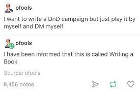

Some basics about solo games
This is a rough draft that may or may not go into a tutorial for playing Cairn solo I'm writing. Probably in a more condensed format.
It assumes that you have some familiarity with TTRPGs, and either aren't familiar with solo games, or are familiar, but want to take a step back and think about them from first principles. I'm definitely interested in other perspectives on this but to talk to me about it your options are discord or mastodon. Most recently I read "The Ink That Bleeds", by Paul Czege, who has a very different approach to solo games than I do - it's also a great book and I recommend reading it.
Solo Games vs Writing A Book
Why not just write a book? Well, writing books is great! But there are some things you can get out of solo games:
First, you don't have to actually write the book, which is probably the hardest part of writing a book. Solo games can help you "write" a story and have that creative outlet without actually doing the writing part. Sometimes instead you produce a map or other artifact, end up with rough notes, or speak into a voice recorder. You might end up with no record at all except in your memory and just move numbers up and down on the character sheet. Some examples of games which emphasize this aspect are Delve, by Anna Blackwell, where you produce a drawing of a map, and A Mending, by Sing Yin Khor, where you produce an embroidered map. Games with a particular emphasis on producing a nice artifact are known as keepsake games.
Prompts can make a blank page less intimidating. Solo journaling games are games where you write a story, but randomly select prompts around a theme for your creative writing, ending up with a story that is unique to you. Constraints can also help creativity - if you've done some non-RPG creative writing exercises, you might have run into a simpler version of this concept. An example of a game which emphasizes this aspect is The Last Tea Shop, which someone used to create this comic.
Similarly, incorporating other people's ideas into your writing can be more fun. Part of the fun of playing a game with other people is that they come up with ideas that you wouldn't on your own, and that in turn can give you new ideas. Instead of having a person be physically present, a solo game can be a way to wrap up someone's contribution to a game into a package where you can play with them later, at any time. Some solo journaling games can feel like a conversation with someone who isn't present. Other games, like Miru, are like a GM is running an adventure for you. Others, like the oracle cards from Fallen, basically allow an outside source to interject ideas in the context of a larger game.
Finally, TTRPGs are not just about pure story telling. There are two parts to the acronym "RPG": there's "Role playing", but there's also "game". When a game emphasizes the "game" aspect more, it can be like a puzzle with story elements, where solving the puzzle creates a story. Sometimes a solo game is less like writing a novel, and more like playing a video game - except one that anyone can easily write mods for. An example of a game like this is Rune by Spencer Campbell.
What are some benefits of solo games?
Solo games are much easier to schedule. You don't have to worry about getting your friends' schedules to line up. You can also play them in 20 minute chunks here or there. Even though I have a weekly RPG campaign with other people, I like to try out more new games than I could ever hope to schedule.
Solo games let you explore themes and topics that your regular game group isn't interested in exploring. Maybe a topic is too heavy and dark for them, or they find the idea of a wholesome slice-of-life game boring. Or maybe it's just that nobody you know is interested in a particular niche topic. If you want to play a game with a consistently serious tone, group games often lean towards being at least a little bit jokey, because in addition to playing the game you're also hanging out with friends.
There are some things that are considered bad practice in TTRPGs becasue they aren't fun for other people, like having a character with a 10 page backstory, or going on a half hour monologue about the cool worldbuilding you did. If you've always been disappointed that you can't really do these things in group games, solo games might be the answer.
Solo games also don't preclude sharing your creativity with other people. People write up solo game reports, play live on social media, share drawings they have made, and so on. There's also a community aspect to writing and sharing your own solo games.
Safety tools
In multiplayer games, the purpose of safety tools are to make sure you're all on the same page about what kind of game you want to play with other people and what topics you're comfortable with. In solo games, you only have to worry about yourself.
Sometimes, though, you invent an imaginary other person who butts into your game without realizing it. This imaginary person might insist that you follow "the rules" and not change anything, or follow the game writer's "intent", or that it's somehow possible to "cheat" at a solo game. Or maybe they're a real person but they're from the Internet. You don't owe this person anything.
Remember that a solo game is basically a tool you use to create a story. If the tool isn't helping you, you don't need to use it. If you find the tool is most useful if you don't follow the instruction manual, that's fine too.
There's also the subject of "bleed", of how especially in journaling games, intense emotions from the game can bleed over into real life. "The Ink That Bleeds", mentioned above, does a much better job than I could of discussing it.